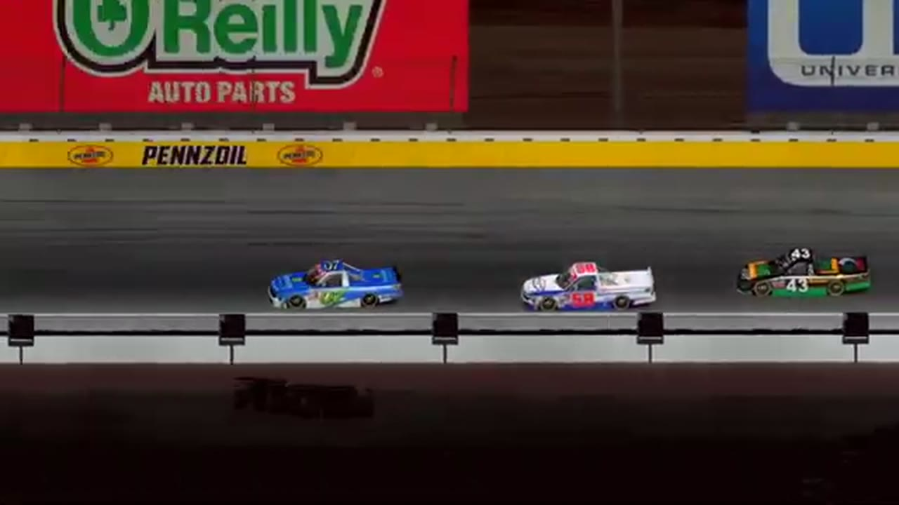

Ethan Moreno
Darkhorse Racing
4 RECOVERED WINS / EVERY ONE RECEIPTED
- Official files
- 13
- Central editions
- 5
- Exact tape cues
- 28
- Accepted podiums
- 4
Ethan Moreno's accepted HLRN result file contains 4 supported feature wins and 4 recovered podiums: S2 R3 at Chicagoland (P1); S2 R1 at Daytona (P1); S1 R6 at Las Vegas (P1); S1 R2 at Homestead-Miami (P1). HLRN materials currently associate the file with Darkhorse Racing. The currently indexed source window runs from November 24, 2025 through July 20, 2026.
The searchable official-broadcast footprint covers 13 race files. 5 Highline Central editions and 28 primary-race jump points connect the result ledger back to the tape. The densest direct-tape categories are restart (6 cues) and finish (5 cues). Those counts describe where the name is easiest to find; they are not fault, pace, or performance grades. A source-attributed car frame is published with its original video and timestamp. That is the current discovery map for Ethan Moreno.
No unsupported start total, full points total, car number, or finishing position is added around those receipts. The dossier grows from accepted results and source appearances, not from broadcast-name volume. Separately, 1 Highline Live file sits on the bonus shelf and never enters the official season ledger. The displayed name is labeled transcript normalized; that status remains visible so an owner roster can strengthen or correct the identity without rewriting the evidence trail. Those boundaries define Ethan Moreno's public HLRN file.
10 featured race-tape cues
These are discovery routes into complete HLRN broadcasts, not performance grades or inferred results.
- S2 / R1 · RESULT
Ethan Moreno is confirmed atop the Daytona results
The Season 2 Daytona results readout records Ethan Moreno first, Brandon Showers second, and Ryan Wilson third.
Daytona - S1 / R6 · RESULT
Ethan Moreno is confirmed atop the Las Vegas results
The primary Las Vegas results readout records Ethan Moreno first, Justin Lee Pearson second, and Sandy Curtis third.
Las Vegas - S1 / R2 · RESULT
Ethan Moreno is confirmed atop the Homestead-Miami results
The Homestead broadcast's closing readout and interviews record Ethan Moreno first, Francisco Bacayo second, and Juan Escamilla third.
Homestead-Miami - S2 / R3 · FINISH
Ethan Moreno completes Chicagoland's final restart
Ethan Moreno controls the last restart, pulls clear through the final lap, and receives the live Chicagoland winner call with Matt Brown, Dylan Jones, and Kyle Cameron behind him.
Chicagoland - S2 / R1 · FINISH
Ryan Wilson and Ethan Moreno enter the final-lap decision
S2 / R1 at 2:52:31: The white flag opens the final-lap decision at Daytona, with Ryan Wilson, Ethan Moreno, and Grant Wesley named in the decisive group. The cut continues through the immediate finish call on the full primary broadcast.
Daytona - S2 / R1 · FINISH
Ethan Moreno reaches the Daytona checkered
S2 / R1 at 2:53:10: The primary tape calls Ethan Moreno at the Daytona checkered and carries the first replay of the finish. The result label is tied to the accepted ledger.
Daytona - S1 / R6 · FINISH
Ethan Moreno and Justin Lee Pearson enter the final-lap decision
S1 / R6 at 1:41:44: The white flag opens the final-lap decision at Las Vegas, with Ethan Moreno, Justin Lee Pearson, and Sandy Curtis named in the decisive group. The cut continues through the immediate finish call on the full primary broadcast.
Las Vegas - S1 / R2 · FINISH
Ethan Moreno and Juan Escamilla enter the final-lap decision
S1 / R2 at 1:31:05: The white flag opens the final-lap decision at Homestead-Miami, with Ethan Moreno and Juan Escamilla named in the decisive group. The cut continues through the immediate finish call on the full primary broadcast.
Homestead-Miami - S1 / R6 · STAGE
A stage-scoring discussion at Las Vegas
S1 / R6 at 58:58: The broadcast enters a stage-scoring discussion at Las Vegas with Nick Bowman, Ethan Moreno, Trevor Haley, and Justin Lee Pearson in the scoring call. The clip preserves the on-air timing or points call without promoting it into a complete stage result; the accepted feature result ledger remains separate.
Las Vegas - S1 / R6 · STAGE
Stage 1 winner call at Las Vegas
S1 / R6 at 1:12:29: The broadcast enters a stage-scoring discussion at Las Vegas with Trevor Haley, Juan Escamilla, and Ethan Moreno in the scoring call. The clip preserves the on-air timing or points call without promoting it into a complete stage result; the accepted feature result ledger remains separate.
Las Vegas
Recent editions connected to Ethan Moreno
Moreno Owns the Chicagoland Closing Run
Nick Bowman led the most laps, but Ethan Moreno pulled clear of Matt Brown and Kyle Cameron when the final lap arrived.
S2 / R1Moreno Restarts the Story at Daytona
Prime X swept the stage points, but Ethan Moreno abandoned Ryan Wilson on the final run and restored Darkhorse to Victory Lane.
S1 / R6Moreno Owns Las Vegas
Nick Bowman stole Stage 1, but Ethan Moreno answered with the pole, fastest lap, most laps led, Stage 2, and the win.
S1 / R4Escamilla Takes the Superspeedway
James Smith and an uncertain second-stage scorer set the table before Juan Escamilla displaced teammate Trevor Haley in the final run.
S1 / R2Moreno Takes Over Homestead
Juan Escamilla and Bryce Hinton split the stages before Ethan Moreno turned his Highline debut into a feature win.
Complete starts, finishes, and points remain open beyond the recovered results. Name normalization remains reviewable against owner records.